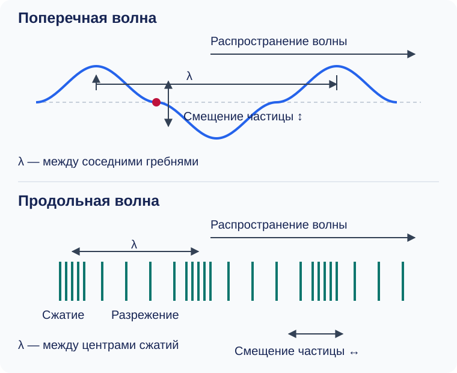
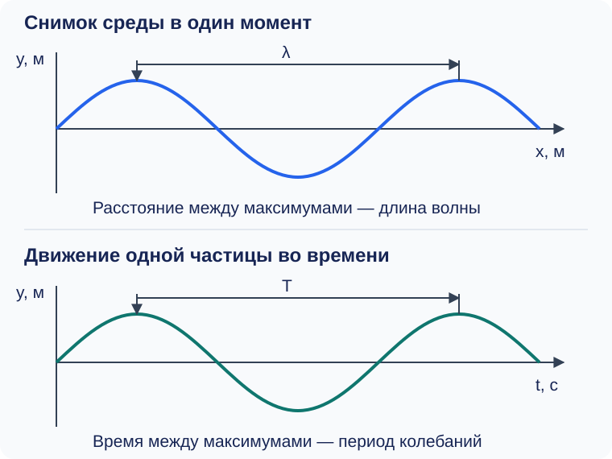

Механические волны. Скорость и длина волны
Если встряхнуть один конец натянутой верёвки, по ней побежит изгиб. При этом каждый небольшой участок верёвки лишь отклоняется от положения равновесия и возвращается обратно. Что же движется вдоль верёвки, если её вещество не перемещается вместе с изгибом?
Как возникает механическая волна
Вспомним: колебание — повторяющееся изменение состояния системы около положения равновесия. В волне колеблется не одна изолированная система: возмущение передаётся от одного участка среды к другому.
При небольшом растяжении или сжатии упругого тела возникают силы, стремящиеся восстановить его состояние. Смещённый участок действует на соседний, соседний — на следующий. Благодаря упругости и инерции среды возмущение распространяется не мгновенно, а с определённой скоростью.
Для возникновения и распространения механической волны нужны:
- источник возмущения;
- материальная среда, части которой взаимодействуют;
- условия, при которых среда может передавать данное возмущение.
Не всякая среда передаёт любые виды волн. Например, натяжение верёвки позволяет распространяться поперечному изгибу, а воздух передаёт чередующиеся сжатия и разрежения.
Один толчок может создать одиночный импульс. Если источник колеблется периодически, он создаёт периодическую волну. Далее период и длину волны рассматриваем именно для установившейся периодической волны.
Что переносит волна
Чтобы создать волну на верёвке, нужно совершить работу. Возмущение может передать энергию другому телу: например, колебания воздуха приводят в движение мембрану микрофона.
Отметка на верёвке движется преимущественно вверх-вниз, но не бежит к другому концу вместе с гребнем. На поверхности воды поплавок тоже не обязан двигаться вместе с гребнем: движение поверхности сложнее, чем движение идеальной верёвки, а течение воды — отдельное явление.
Поперечные и продольные волны
Тип волны определяют, сравнивая направление смещения частиц с направлением распространения возмущения.


Поперечная волна
Пример — волна на натянутой верёвке: возмущение идёт вдоль верёвки, а её участки смещаются поперёк неё. В твёрдых телах возможны поперечные упругие волны: при сдвиге слоёв возникают восстанавливающие силы.
Продольная волна
В пружине, которую толкают вдоль её оси, чередуются сжатия и разрежения. Возмущение распространяется вдоль пружины; её витки движутся вперёд-назад около своих положений равновесия. Звук в воздухе — продольная волна: сжатиям и разрежениям соответствуют изменения давления и плотности.
Продольные упругие волны распространяются в газах, жидкостях и твёрдых телах. В объёме обычных жидкостей и газов поперечные упругие волны не распространяются: эти среды не обладают статической упругостью сдвига. Поверхностные волны на воде — особый случай: движение частиц в них обычно имеет и вертикальную, и горизонтальную составляющие.
Период, частота, амплитуда и длина волны
Нужно различать два наблюдения: можно следить за одной частицей во времени, а можно сделать снимок всей волны в один момент.
| Величина | Физический смысл | Единица СИ |
|---|---|---|
| Период \(T\) | Время одного полного колебания частицы | с |
| Частота \(\nu\) | Число полных колебаний за единицу времени | Гц |
| Амплитуда \(A\) | Наибольший модуль смещения частицы от равновесия | м |
| Длина волны \(\lambda\) | Расстояние между ближайшими точками, колеблющимися в одинаковой фазе, вдоль распространения | м |
Связь частоты и периода:
Одинаковая фаза означает одинаковое состояние колебательного движения: например, одинаковое смещение и одинаковое направление скорости. Два соседних гребня синусоидальной бегущей волны находятся в одинаковой фазе. Гребень и соседняя впадина — в противоположных фазах.
У поперечной синусоидальной волны длину волны измеряют между соседними гребнями или соседними впадинами. У продольной — между центрами соседних сжатий либо соседних разрежений.
Скорость распространения волны
Скорость \(v\) показывает, как быстро перемещается определённая фаза волны — например, гребень. Для простого случая распространения без изменения формы можно использовать:
где \(s\) — пройденное возмущением расстояние за время \(\Delta t\).
За один период каждый участок совершает полное колебание, а рисунок бегущей периодической волны сдвигается на одну длину волны. Поэтому:
Скорость волны и скорость частицы — разные величины. Участок верёвки в крайних положениях на мгновение останавливается и затем меняет направление, но гребень продолжает распространяться. Даже в продольной волне, где направления лежат на одной прямой, эти скорости не совпадают.
Для малых возмущений скорость определяется свойствами среды и условиями распространения. Например, скорость на верёвке зависит от её натяжения и массы единицы длины. Амплитуда характеризует размах колебаний, а не расстояние, которое проходит волна за секунду.
В школьных задачах далее считаем среду однородной, а скорость — постоянной и не зависящей от частоты в рассматриваемом диапазоне.
Два разных графика


На графике смещения от координаты по горизонтали отложено расстояние. Промежуток между соседними максимумами равен \(\lambda\).
На графике смещения одной частицы от времени по горизонтали отложено время. Промежуток между соседними максимумами равен \(T\).
Одинаковый вид синусоид не делает графики взаимозаменяемыми: сначала прочитайте подпись горизонтальной оси. По одному снимку формы волны без сведений о времени нельзя определить её скорость.
Разобранные примеры
Пример 1. От частоты к длине волны
Волна на верёвке
Скорость волны \(v=12\ \text{м/с}\), частота источника \(\nu=3\ \text{Гц}\). Найдём период и длину волны.
За один период гребень проходит \(4\ \text{м}\), но это не путь частицы верёвки: она колеблется поперёк направления распространения.
Пример 2. Измерение по нескольким гребням
Сначала посчитаем промежутки
Расстояние от первого до четвёртого гребня равно \(1{,}8\ \text{м}\). Частица совершает 10 полных колебаний за \(5\ \text{с}\).
Между первым и четвёртым гребнями три длины волны:
Что изменится при другой частоте
Если в той же среде при неизменных условиях источник колеблется вдвое чаще, то период уменьшается вдвое. При неизменной скорости по формуле \(\lambda=v/\nu\) длина волны также уменьшается вдвое. Нельзя утверждать, что «частота выросла — значит, волна пошла быстрее».
При переходе установившейся волны через неподвижную границу сред частота сохраняется: её задаёт источник. Если скорость во второй среде другая, изменяется длина волны:
Это сравнение относится к прошедшей волне, если она может распространяться во второй среде.
Краткий итог
- Механическая волна распространяется в материальной среде и переносит энергию.
- Поперечные и продольные волны различаются направлением смещения частиц относительно распространения.
- Период относится к колебанию во времени, длина волны — к повторению состояния в пространстве.
- Для периодической бегущей волны \(v=\lambda\nu=\lambda/T\).
- Скорость распространения волны не равна скорости колеблющихся частиц.
Вопросы для самопроверки
Объясните своими словами
1. Почему одиночного толчка достаточно для возникновения волны, но не обязательно для периодической волны? 2. Как движется отмеченный виток пружины в продольной волне? Что распространяется вдоль пружины? 3. Почему звук может распространяться в воздухе, но не в вакууме? 4. Чем отличаются период и длина волны? Какие подписи осей помогают их определить? 5. Почему двух точек с одинаковым смещением недостаточно, чтобы утверждать, что они колеблются в одинаковой фазе? 6. Что произойдёт с длиной волны при увеличении частоты, если скорость остаётся постоянной?
Задачи для самостоятельной работы
Считайте волны периодическими, среды однородными, а скорости постоянными в условиях каждой задачи.
- Волна распространяется по верёвке со скоростью \(8\ \text{м/с}\) при частоте \(4\ \text{Гц}\). Найдите период и длину волны.
- Расстояние от первого до шестого гребня равно \(2\ \text{м}\). Период колебаний \(0{,}2\ \text{с}\). Определите длину волны, частоту и скорость.
- В продольной волне расстояние между центрами соседних сжатий \(75\ \text{см}\). Частота \(16\ \text{Гц}\). Определите скорость волны.
- Возмущение прошло \(18\ \text{м}\) за \(3\ \text{с}\). Частота колебаний \(5\ \text{Гц}\). Найдите длину волны. Можно ли по этим данным узнать амплитуду? Объясните.
- При неизменных условиях на верёвке частоту источника увеличили с \(2\) до \(5\ \text{Гц}\). Первоначальная длина волны \(1{,}5\ \text{м}\). Найдите новую длину волны.
- Частота звука \(500\ \text{Гц}\), его скорость в воздухе \(340\ \text{м/с}\), в воде \(1500\ \text{м/с}\). Найдите длины волн в обеих средах. Какие величины сохраняются при переходе звука через неподвижную границу?
- На снимке синусоидальной поперечной волны соседние гребень и впадина разделены расстоянием \(0{,}4\ \text{м}\). На графике колебаний частицы соседние положительные максимумы разделены временем \(0{,}5\ \text{с}\). Найдите длину волны, период и скорость.
Домашнее задание
§42–46. Повторите определения и связь \(v=\lambda\nu\). Выполните задачи для самостоятельной работы.